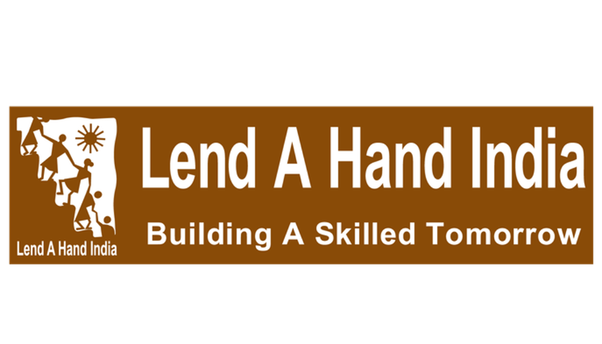
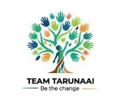
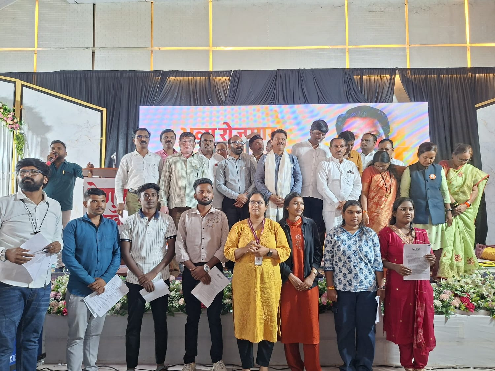

#1 • Eligibility
Check Your Eligibility
See if you meet the education, age, skills, and job-specific requirements.
- Educational qualification
- Age criteria
- Relevant skills
- Job-specific requirements


Every young person deserves the opportunity to build a successful career.

Through the collaborative efforts of Tarunai and Lend A Hand India, our Job Fair initiative aims to connect youth with employers, introduce them to career opportunities and support their journey towards employment.
From mobilization and registration to interviews, selection and placement follow-up, we work towards making employment opportunities more accessible to young people.
Bringing education, skills, young people, and employers together to create meaningful pathways towards employment.
Working for over 15 years to bridge the gap between education and skills, LAHI connects vocational education with employer requirements and employment opportunities.
An implementing partner in the Job Fair initiative, working with LAHI and other partners to connect young job seekers with employers.
Through collaborative Job Fair initiatives, the organizations bring young people, employers, educational institutions, and other stakeholders together to facilitate recruitment and career exposure.
Explore our journey of connecting young people with employers and creating pathways to employment.
Every Job Fair brings young people and employers together, opening pathways to employment and career development.
Through collaboration, youth mobilization, employer engagement, and recruitment support, Tarunai and Lend A Hand India work to make employment opportunities more accessible.
* 40 participating employers cited in Executive Summary and final outcomes table (56 noted in day-of-event mobilization log).
** 70 volunteers cited in Executive Summary and outcomes table (50 noted in staffing breakdown). Figures presented per official summary.
Organized by Lend A Hand India in association with Samagra Shiksha Maharashtra
Note: Mobilized reach, online registrations, actual attendees, and selections are distinct, non-additive stages in the recruitment pipeline.
Documented milestones and recruitment outcomes from regional Job Fair initiatives.
Krushi Vaibhav Lawns, Mehkar, Buldhana, Maharashtra
Chhatrapati Sambhajinagar, Maharashtra
Behind every statistic is a young person taking steps toward a career and an employer finding motivated talent.
Dedicated field mobilization reaching rural, semi-urban, and vocational school students to raise awareness about legitimate employment pathways.
Orientation sessions helping job seekers structure resumes, highlight vocational competencies, and approach interview panels with confidence.
Direct on-the-spot interviews facilitating transparent selection and multi-sector matching between candidate skills and company vacancies.
Continuous post-fair tracking, second-round coordination, and counseling to facilitate smooth transition from selection to employment joining.
How our collaborative model guides youth from outreach to employment follow-up.
Mobilize young people and share employment opportunities.
Support registration and CV readiness.
Connect candidates with employers.
Facilitate interviews and recruitment opportunities.
Track selections, appointment letters, and joining outcomes where available.
* Disclaimer: The process flow illustrates the programmatic support lifecycle and does not imply that every registered candidate completes every stage or obtains employment.
A successful employment journey begins before the interview. Through bootcamps, career-readiness sessions, and student engagement activities, young people are supported in preparing their CVs, understanding their skills, and building confidence to interact with employers.
Tarunai and Lend A Hand India work with students, educational institutions, and other stakeholders to help candidates prepare for recruitment opportunities.
* Verified figures from the Chhatrapati Sambhajinagar Job Fair 2023 official report. Figures represent this specific event's preparatory phase, not organization-wide totals.
Learn about employment opportunities, eligibility requirements, and available job roles.
Identify relevant skills, prepare a CV, and understand the registration process.
Develop interview readiness through guidance, common interview questions, and mock interviews.
Participate in the Job Fair and interact with employers to explore suitable opportunities.
* This is an explanatory journey illustrating the preparatory pathway, not a claim that every student completes all four stages.
Five steps towards your career.
See if you meet the education, age, skills, and job-specific requirements.
Fill in your details, select suitable opportunities, and submit your registration.
Meet employers, explore job opportunities, share your CV, and attend interviews.
Employers review candidates and share selection decisions and offer or joining details.
* Selection timelines and outcomes depend on individual employers.
Decide what to do next based on your interview outcomes and career goals.
Review the offer details, confirm acceptance, and complete the joining formalities.
Politely decline the offer and explore other suitable job opportunities.
* Accepting or declining an offer is the candidate's personal decision. Participation does not guarantee an offer.
Explore participating companies and discover career opportunities that match your skills and aspirations.
Have questions about our job fairs or career opportunities? Get in touch with our team.
Prahlad Arcade, Bhakti Marg, Off Law College Road, Erandwane, Pune, Maharashtra 411004, India.
Building opportunities. Shaping futures.
Choose an option below to register for the upcoming Job Fair or check your interview selection status.